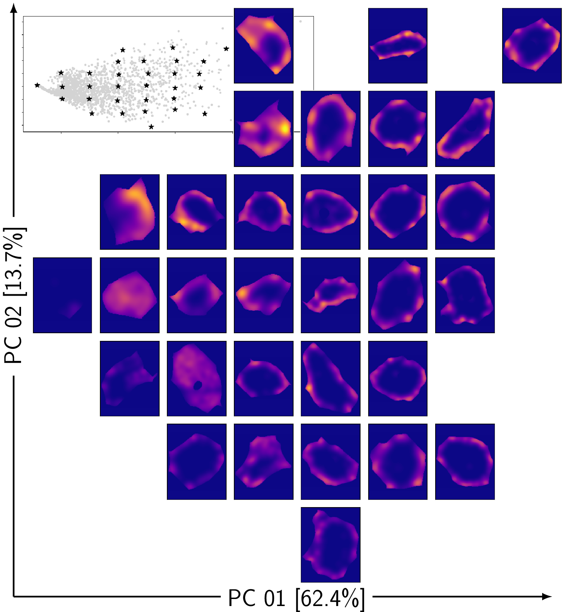
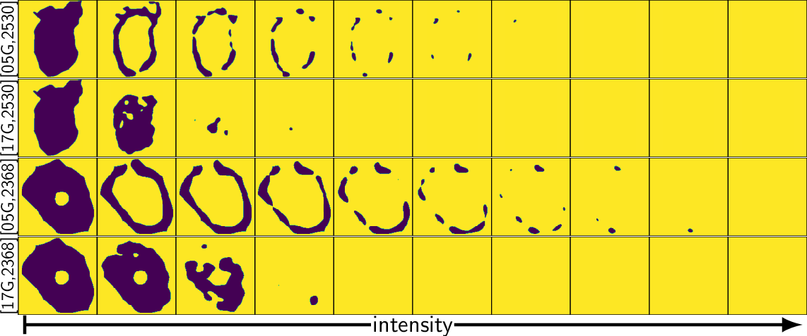
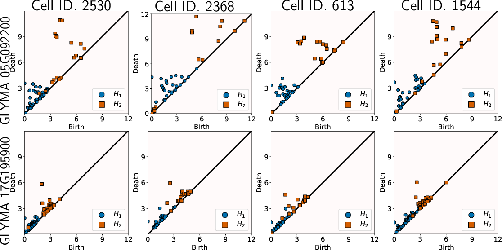
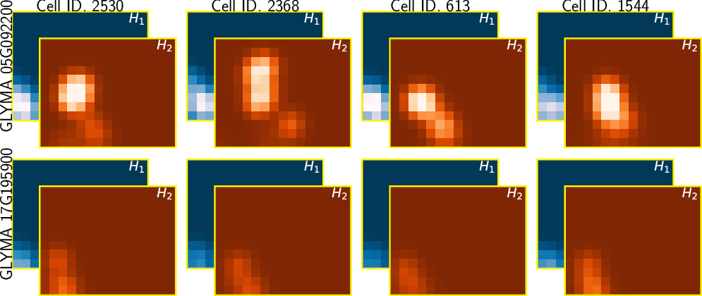
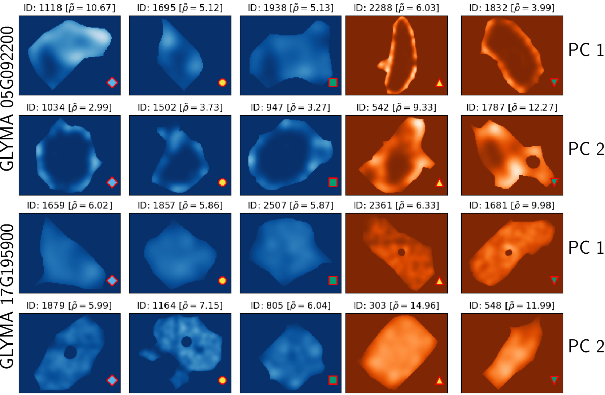
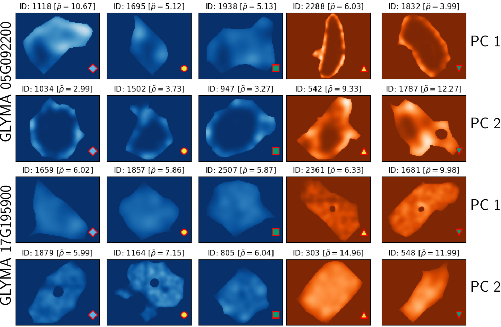

Model sub-cellular transcript patterns with topology

↓More details↓
bit.ly/mcarto
 Erik Amézquita1,2
eah4d @ missouri.edu
Erik Amézquita1,2
eah4d @ missouri.edu
1. Division of Plant Sciences & Technology, University of Missouri, Columbia, MO
2. Department of Mathematics, University of Missouri, Columbia, MO
3. Complex Biosystems Program, University of Nebraska, Lincoln, NE
4. Resolve Biosciences GmbH, Monheim am Rhein, Germany
5. Vision Science group, University of California, Berkeley, CA
TDA: A framework that can compare all kinds of spatial distributions and patterns regardless of different cell sizes, shapes, orientations, and transcript number.





 

This research was supported by Mizzou Forward and NSF (Awards #2127485 and #1854326). Registration and travel support for this presentation was provided by the National Science Foundation and NSF Project 00087298.